1. 分析背景
随着教育信息化的发展，对学生学习习惯和生活方式的深入理解变得尤为重要。本报告旨在通过分析学生的日常习惯（如学习时长、社交媒体使用、睡眠时间等）与学业表现（考试成绩）之间的关系，揭示影响学生学业成功的关键因素。
本报告的数据来源于一份包含1000名学生信息的匿名数据集，涵盖了学生的年龄、性别、学习时长、社交媒体使用时长、Netflix观看时长、是否兼职、出勤率、睡眠时长、饮食质量、运动频率、父母教育水平、网络质量、心理健康评分以及课外活动参与度等多个维度的数据。
3. 数据挖掘与可视化
3.1 考试成绩分布
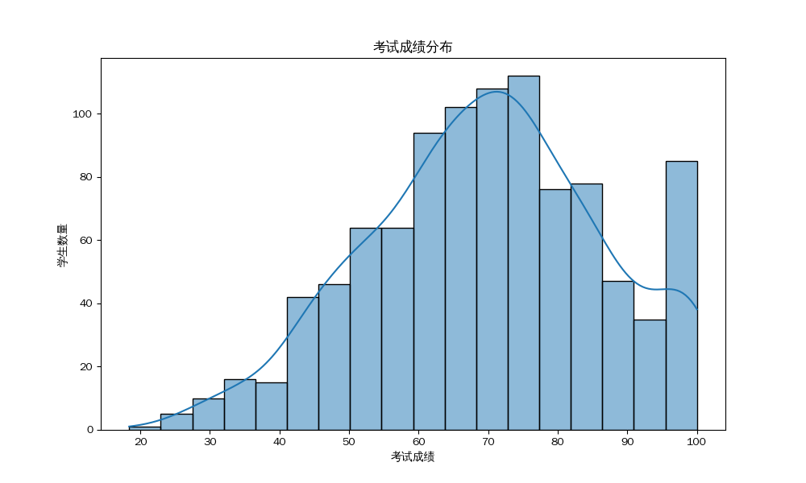
考试成绩大致呈正态分布，但略有偏左，说明大部分学生的成绩集中在中等偏上水平，但也存在少数高分和低分学生。
3.2 性别与考试成绩关系
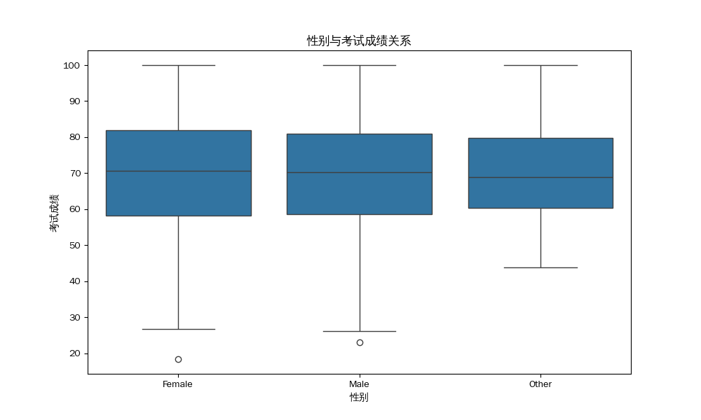
男性和女性学生的考试成绩中位数接近，但女性学生的成绩分布略微集中，男性学生的成绩分布范围更广，表明性别对考试成绩的影响不显著。
3.3 学习时长与考试成绩关系
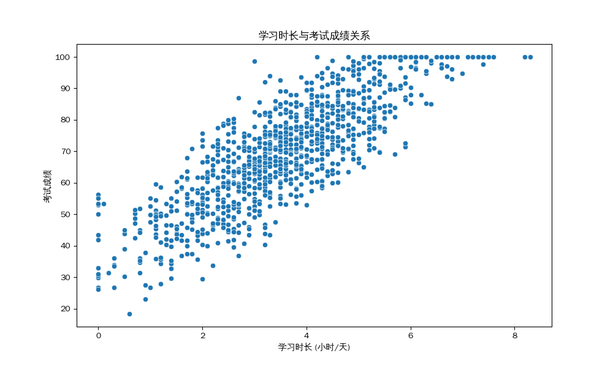
学习时长与考试成绩之间存在一定的正相关关系。通常情况下，学习时间越长的学生，考试成绩也越高。
3.4 社交媒体使用时长与考试成绩关系
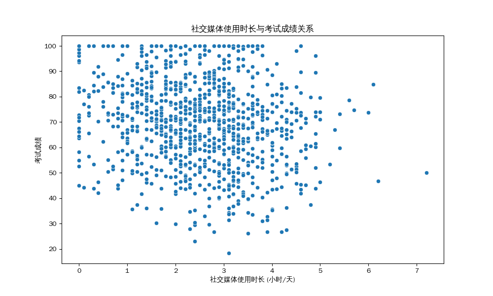
社交媒体使用时长与考试成绩之间呈现出一定的负相关趋势。过度使用社交媒体可能会分散学生的注意力，影响学习效率。
3.5 Netflix观看时长与考试成绩关系
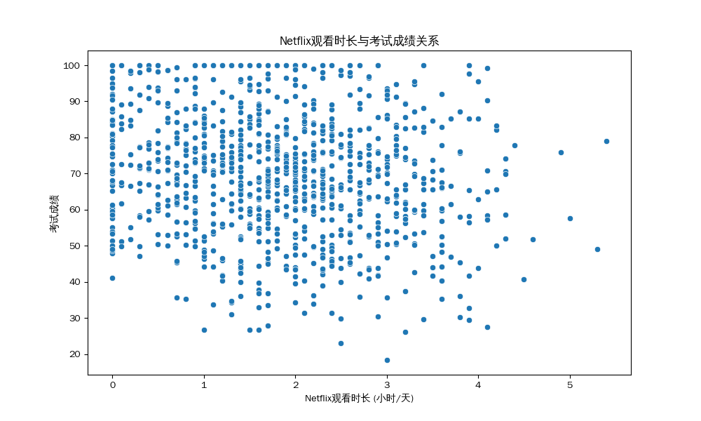
Netflix观看时长与考试成绩也存在一定的负相关关系。长时间观看Netflix可能占用学生的学习时间，从而对学业表现产生负面影响。
3.6 出勤率与考试成绩关系
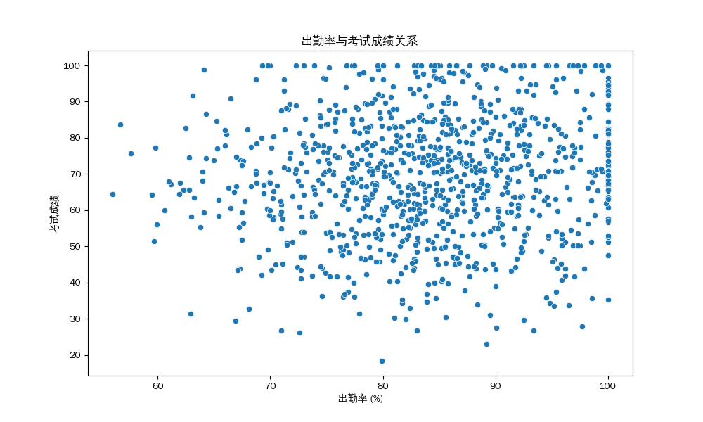
出勤率与考试成绩之间存在明显的正相关关系。出勤率越高的学生，考试成绩往往也越高。这强调了课堂参与和学习连续性对学业成功的重要性。
3.7 睡眠时长与考试成绩关系
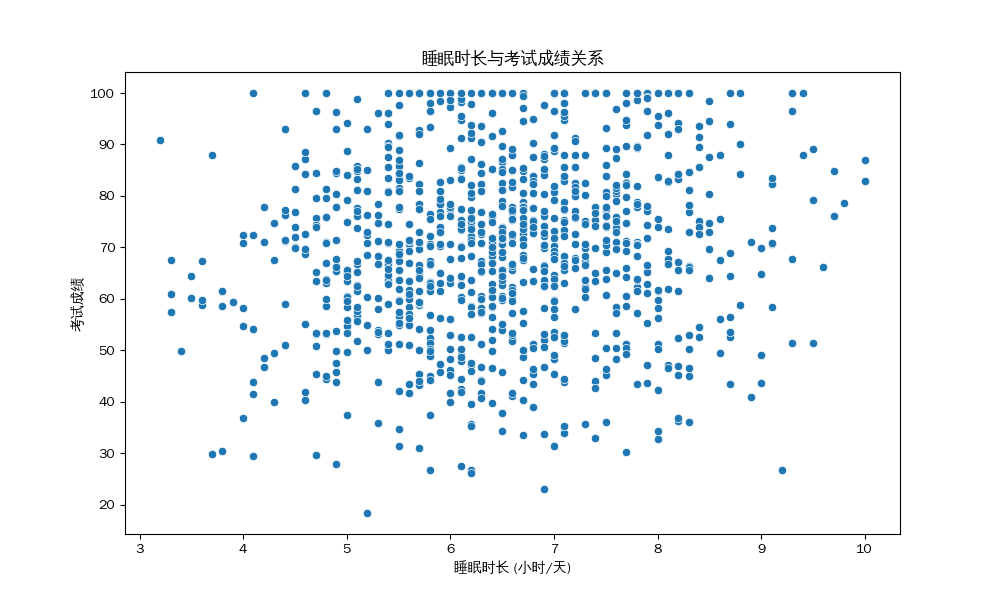
睡眠时长与考试成绩之间存在一定的正相关关系。充足的睡眠有助于学生保持精力充沛，提高学习效率和记忆力。
3.8 饮食质量与考试成绩关系
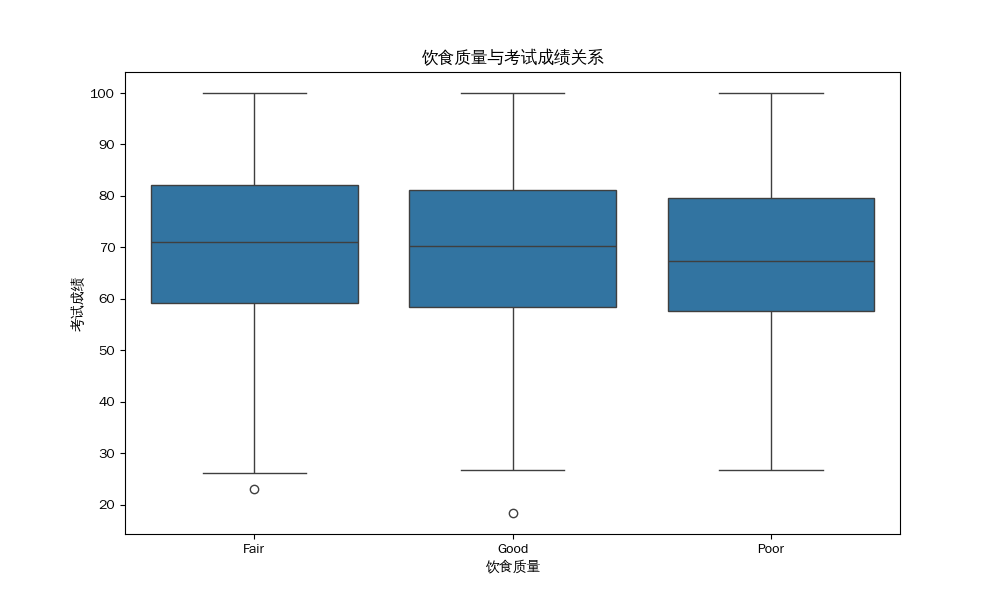
虽然不同饮食质量组的考试成绩存在差异，但这种差异并不十分显著。饮食质量可能对学业表现有一定影响，但并非决定性因素。
3.9 运动频率与考试成绩关系
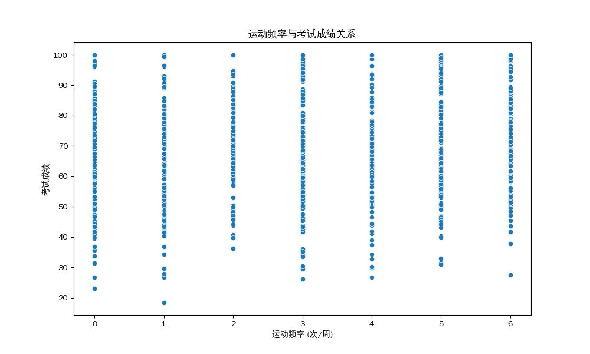
运动频率与考试成绩之间没有发现明显的线性关系。适度的运动有助于缓解学习压力，提高身体素质。
3.10 父母教育水平与考试成绩关系
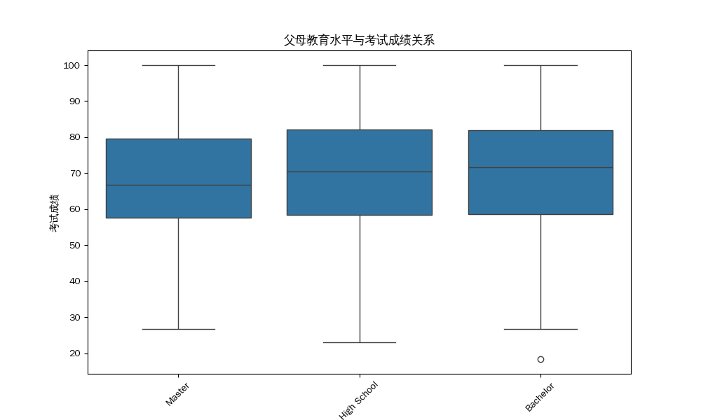
父母教育水平与考试成绩之间存在一定的正相关关系。父母教育水平越高的学生，其考试成绩也相对较高。
3.11 心理健康评分与考试成绩关系
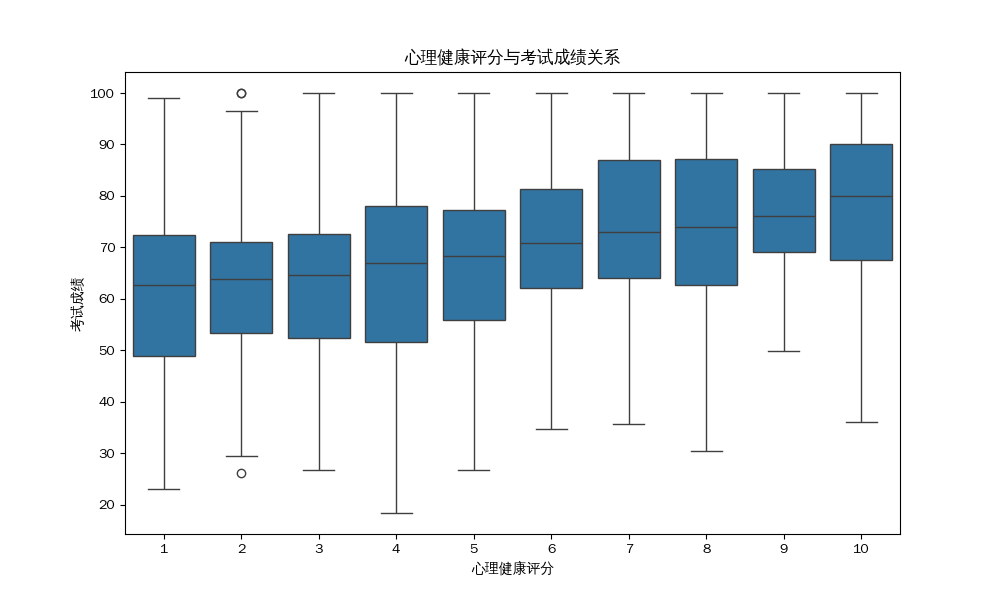
心理健康评分与考试成绩之间存在一定的正相关关系。心理健康状况良好的学生，其考试成绩往往也较高。
3.12 课外活动参与度与考试成绩关系
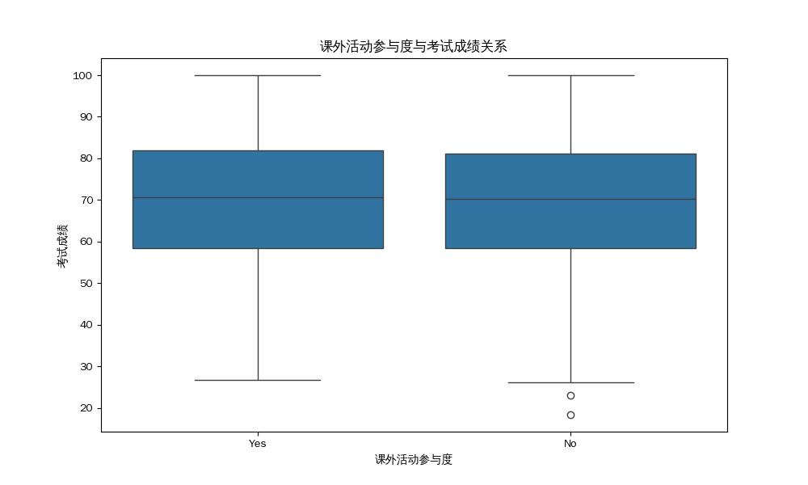
课外活动参与度与考试成绩之间没有发现显著的线性关系。课外活动可能对学生的综合素质发展有益，但对考试成绩的直接影响有限。
3.13 各数值变量相关性热力图
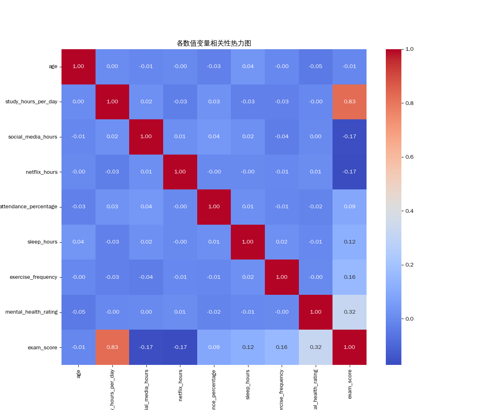
热力图通过颜色深浅展示变量间的相关系数。考试成绩与学习时长、出勤率、睡眠时长和心理健康评分呈现正相关，与社交媒体使用时长和Netflix观看时长呈现负相关。
4. 分析建议与结论
学习时长是关键因素：学习时长与考试成绩呈正相关，表明投入足够的学习时间是取得好成绩的基础。
不良习惯的负面影响：社交媒体和Netflix观看时长与考试成绩呈负相关，提示过度娱乐可能对学业产生负面影响。
出勤率的重要性：出勤率与考试成绩呈显著正相关，强调了课堂参与和学习连续性的重要性。
睡眠的积极作用：充足的睡眠对考试成绩有积极影响，但需要注意适度。
家庭环境的影响：父母教育水平与考试成绩呈正相关，表明良好的家庭教育背景对学生学业有促进作用。
心理健康的重要性：心理健康评分与考试成绩呈正相关，强调了学生心理健康对学业表现的深远影响。